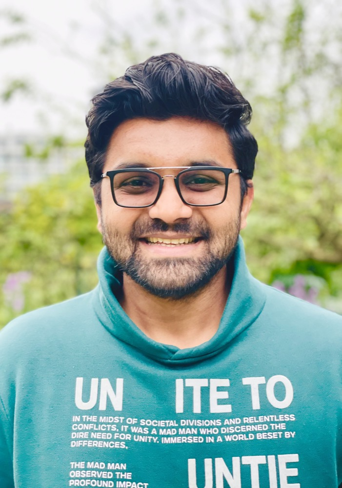

Senior Product Engineer.
Building Fin.
I'm Saad Khalid — seven years of full-stack engineering, now building the Fin AI agent at Intercom and running two research tracks at SnT Luxembourg: a Common-Crawl-to-Neo4j knowledge-graph pipeline (ToMMeR NER, Wikidata linking, Airflow), and a fully-local DFMEA Q&A assistant for CEBI Luxembourg. Master's in AI Systems from EPITA Paris.

What I actually work on.
Product engineering meets AI research engineering.
I work two complementary tracks. By day I'm a Senior Product Engineer on Fin — the help-center side, where the model has to actually solve a customer's problem, not just sound like it does.
In parallel, I'm an R&D Specialist at SnT Luxembourg working on two tracks: an Airflow pipeline that builds a knowledge graph from Common Crawl (LLM triplets, ToMMeR NER, Wikidata linking, Neo4j), and a fully local DFMEA Q&A assistant at CEBI Luxembourg powered by Mistral-Nemo on Ollama with vector and structured retrieval.
Across that history I've built ETL/ELT pipelines with Apache Airflow, validated data with Great Expectations, tracked experiments with MLflow, monitored production on Grafana, and shipped quick analytical UIs in Streamlit — the unglamorous half of AI work, which is most of it.
Before this: Senior Full-Stack at Inbox Health (Series-B SaaS, 50M users), and engineering roles across France, the US, Canada, and Pakistan. Recently completed a Master's in AI Systems at EPITA Paris (2025).
What I reach for, by how often.
No self-rated percentages. Just what I use weekly, monthly, and when the job calls for it.
Two SnT projects worth opening.
My current SnT research. Code is private — happy to walk through it. More public work in the grid below.
RTE — Common Crawl → Knowledge Graph
Airflow-orchestrated pipeline that builds a knowledge graph from Common Crawl. A four-DAG flow fetches Wikipedia from the CDX index, extracts entity-relation triplets via LLM, runs Named Entity Recognition with ToMMeR (Llama-3.2-based), maps entities to Wikidata QIDs, and lands the graph in Neo4j. Containerised end to end; the ToMMeR NER runs as its own FastAPI microservice.
→ LLM triplets + ToMMeR NER
→ Wikidata QIDs → Neo4j
CEBI DFMEA Q&A Assistant
A fully local / offline Q&A assistant for a CEBI Luxembourg DFMEA — built around multilingual Mistral-Nemo running on Ollama (IT / FR / EN). Routes each query across three indices — SQLite + FTS5 (structured + full-text) and ChromaDB + nomic-embed-text (semantic) — before generating an answer. Designed for confidential automotive engineering data: no inference leaves the host.
→ query router → Mistral-Nemo (Ollama)
→ answer (fully local)
Agentic KG Workshop
Multi-agent KG construction with Neo4j + OpenAI. Workshop fork I worked through alongside the Agentic KG cert.
Crypto AI Agent
Virtual crypto influencer that mimics a public figure's voice using live market data.
Cross-Domain Recommender
FastAPI + Streamlit + Ollama with a Graph Neural Network for movie→game suggestions.
Global Price Index
Node service computing a BTC/USDT index by aggregating Binance, Kraken, and Huobi via REST + WebSocket.
House-Price Pipeline
End-to-end Python package — preprocessing, training, and inference modules.
Customer Churn Pipeline
Production-shape ML pipeline for churn prediction with feature engineering and reporting.
Heart Disease Prediction
Health prediction pipeline managed with Pipenv/Conda — Python 3.9 + PostgreSQL.
Seven years across four countries.
Senior Product Engineer · Intercom (Fin)
Mar 2025 — Present · ParisBuilding the Help Center Fin Agent integration — end-to-end product engineering across model integration, web surface, bug resolution, and performance optimisation.
R&D Specialist · SnT Luxembourg
Mar 2025 — Present · LuxembourgTwo research tracks at SnT Luxembourg:
- ▸ RTE Tommer — Airflow pipeline building a knowledge graph from Common Crawl: LLM triplet extraction + ToMMeR NER + Wikidata entity linking, landing in Neo4j.
- ▸ CEBI Luxembourg — fully-local DFMEA Q&A assistant powered by Mistral-Nemo on Ollama, combining SQLite/FTS, ChromaDB vector search, and a Streamlit UI. Confidential automotive data, zero cloud calls.
Senior Full Stack Engineer · Inbox Health
Mar 2022 — Jan 2025 · ConnecticutSeries-B SaaS serving 50M users. Shipped MFA, led the Ember 1.13 → 2.0 upgrade, integrated LogRocket / Mixpanel / Canny for analytics and error tracking. Rotated as Support Engineer biweekly — production debugging across the platform.
Software Engineer · Cloudtek
Nov 2021 — Mar 2022 · USContributed to AutoEurope (global car-rental platform). Migrated the E2E test suite from Protractor to Cypress; managed performance monitoring across multi-country deployments.
Software Engineer · MicroAgility Services
Oct 2021 — Jan 2022 · CanadaUpgraded a GTA career platform from legacy PHP to a MEAN stack (MongoDB / Express / Angular / Node), supporting HR and job-seeker workflows.
MEAN Stack Developer · Vizz Web Solutions
Mar 2021 — Oct 2021 · PakistanLed development of a Twitter-style social platform. Built a payment-management system integrating PayPal, Google Pay, Apple Pay, and crypto, with cryptographic protection for user data.
Full Stack Developer · O3Interfaces
Dec 2019 — Aug 2020 · PakistanLed the UBL Digital website (major Pakistani bank) with Angular + a headless CMS. Built a content scraper that automated updates across 400+ pages; designed an admin panel for non-developer real-time page-building.
Full Stack Developer · Cognative Health International
Jul 2019 — Dec 2019 · PakistanCloud-based remote-healthcare platform. Built real-time patient monitoring and mobile/web notifications on Angular + Python.
Trained in computer science, finished in AI systems.
Verified through LinkedIn Learning.
"Most LLM apps fail not because the model is wrong, but because the retrieval is shallow, the graph is missing, and the evaluation is unspoken. I work on the boring parts that make the magic land."
What people usually ask first.
What does Saad Khalid work on at Intercom?
He's a Senior Product Engineer on Fin — Intercom's production LLM-powered customer-support agent. He builds the Help Center integration end to end, across model integration, the web surface, and performance.
What is the RTE Tommer project?
An Airflow pipeline at SnT Luxembourg that builds a knowledge graph from Common Crawl. LLM extracts entity-relation triplets, ToMMeR (Llama-3.2-based NER) runs on top, entities map to Wikidata QIDs, the graph lands in Neo4j.
What is the CEBI DFMEA Q&A Assistant?
A fully-local Q&A system for a CEBI Luxembourg DFMEA on a FIAT temperature-sensor assembly. All inference runs on the host via Ollama (Mistral-Nemo). Queries route across SQLite + FTS5 and ChromaDB so confidential automotive data never leaves the machine.
Is Saad available for new roles?
Yes — open to senior IC roles, AI research engineering, and advisory work across the EU, remote-friendly. The fastest path is email: tosaadkhalid@gmail.com.
Where is Saad based?
Paris, France. Open to roles across the EU. The SnT R&D track involves regular work in Luxembourg.
Let's talk shop.
GraphRAG, agentic systems, applied LLM research, or solid senior engineering — if any of those are on your plate, drop me a line.